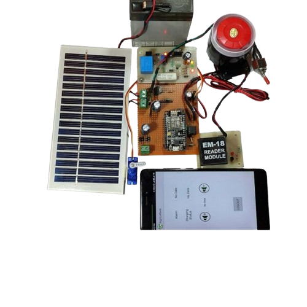

Siren for Agriculture Using Solar
Creating a solar-powered siren for agricultural purposes can be a valuable addition to farm security systems or as a warning mechanism for specific events like animal intrusion or adverse weather conditions. Here's a general guide on how to build one:
Components Needed:
Solar Panel: To capture solar energy and charge the battery.
Battery: To store the solar energy for powering the siren when needed.
Siren: A loud sound-producing device to attract attention or warn of danger.
Charge Controller: To regulate the charging of the battery from the solar panel.
Switches and Wiring: To connect the components together.
Enclosure: To protect the electronics from environmental elements.
Mounting Hardware: To install the system securely in the desired location.